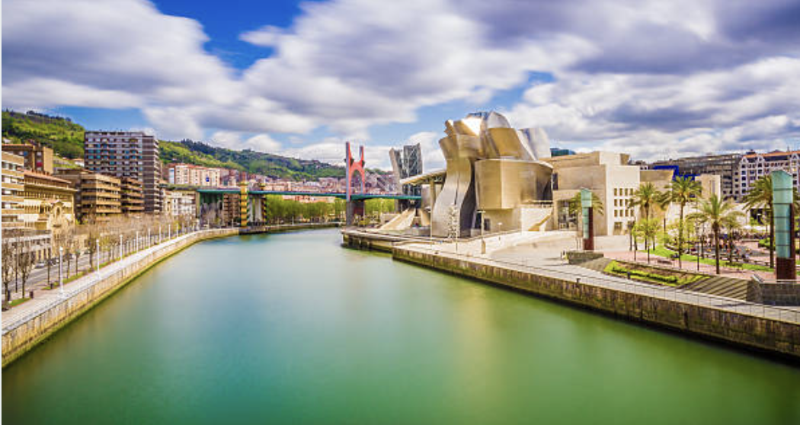
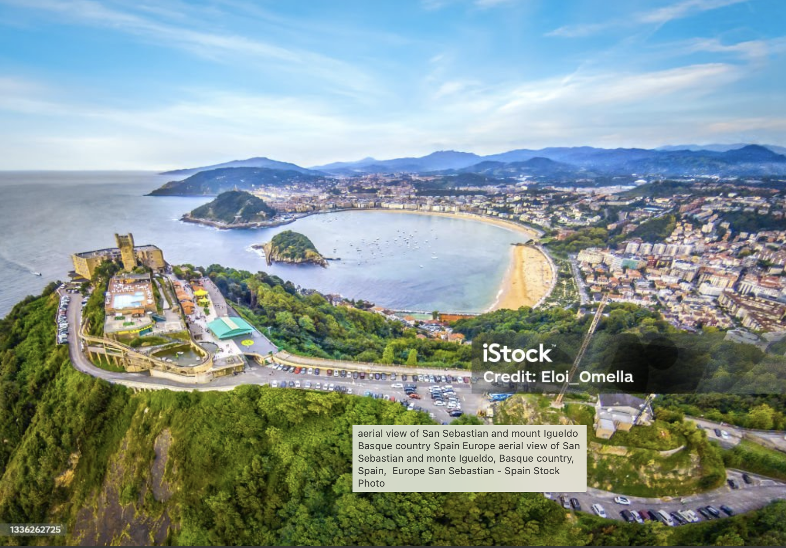
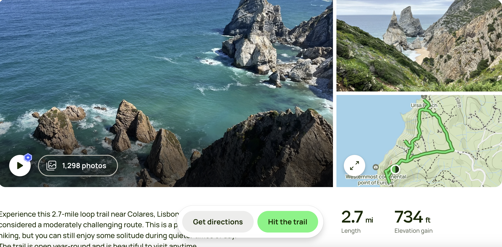

JULIEN, PAUL & JEFF'S BIG ADVENTURE 2025
BILBAO

Transportation:
May 22 Fly Paris to Bilbao/BIO (90min)
Rent car at BIO
Lodging
22-23 May: Poshtel Bilbao
24 May: Torre Zumeltzeg
Itinerary
22 May: After settling in head to Casco Viejo for walking tour, then dinner
23 May: Walking tour of main city, to include visit at Gugenheim museum and optional Museo Belles Artes
24 May: Drive to Parque Narutal de Gorbeia (30min) and hike (5 hours). Then drive to Oñati (45 minutes). Dinner & lodging in Oñati
San Sebastion

Transportation:
Drive from Oñati (1 hr)
Lodging:
25-27 May:
Itinerary
25 May: Arrive at hotel. Hike Monte Urgal & stroll around town
26 May: Hike along beach cliffs to Pasai San Pedro (3 hrs). Lunch in San Pedro. Ferry Boat to Pasai Donibane (30min). Dinner in Donibane then bus back to San Sebastion
27 May: Beach day/surfing
28 May: Travel day, approximately 6-7 hours, including: Drive to BIO (90 min), then fly to SVQ (90min), then drive to Cadiz(90 min)
Cadiz/Huelva

Transportation:
Fly BIO to SVQ (90 min)
Drive to Cadiz (90 min)
Lodging
28-29 May:
Itinerary
28 May: Arrive at hotel in evening
29 May: Walking tour of Cadiz
30 May: Drive to Huelva (2hrs) then procede to Columbus Trail to tour historic site. After visit, drive to Lisbon (4hr drive all the way to Lisbon, Faro is 90 min from Huelva as an alternative)
Lisbon/Sintra

Transportation:
Drive from Huelva (4hr)
Lodging
30 May-2 June:
Itinerary
30 May: Arrive at hotel in evening
31 May: Walking/driving tour of city
1 June: Drive & hike in Parque Natural da Sintra-Cascais (Ursa Beach Cabo da Roca hike, 2.7miles)

2 June: Visit Castle Sintra
3 June: fly to Paris/Barcelona/Oslo